Contents
NeuroScope is an advanced viewer for electrophysiological and behavioral data: it can display local field potentials (EEG), neuronal spikes, behavioral events, as well as the position of the animal in the environment. It also features limited editing capabilities.
NeuroScope is part of neurosuite-3, together with Klusters (cluster viewer and editor), NDManager (parameter files and processing) and KiloKlustaKwik (automatic clustering). While NeuroScope can be used as a standalone application, some of its features are most useful within this framework.
To start a new session, select . The Open dialog lists data files (dat,
lfp, eeg and fil); choose All
files to open a data file with another extension or a session file
(nrs). See File Formats.
A session can also be started from your file manager by opening one of the above files with NeuroScope, or on the command line by typing:
% neuroscope filenameFirst, NeuroScope needs some information about the acquisition
system. It reads this from the parameter file (base.yaml,
see File Formats); if there is none, you
will be prompted to provide this information in the Properties dialog.
More generally, this dialog is where you can set all the parameters for
the various files you view and edit (this will be presented in later
sections of this manual). For now, suffice it to introduce the Channels
tab, which is the only one enabled at this point.
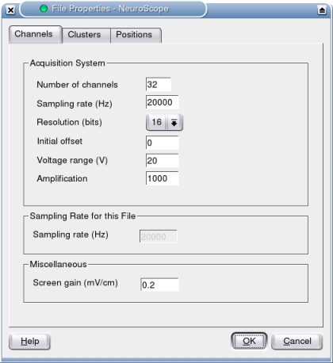
All the fields are self-explanatory, but these fields may need clarification:
Initial offset: some acquisition systems record the data with a fixed offset; this can be specified here so that NeuroScope can recenter all the channels in the display.
Voltage range: the total voltage range, e.g. if the system is set to ±5V, the range is 10V.
Screen gain: millivolts per screen centimeter when the magnification level is set to 1x.
The information provided in the Properties dialog can be later displayed and modified at any time by selecting .
When starting NeuroScope from a terminal, this information can also be provided as command line options. To list available options, type
% neuroscope --help
Usage: neuroscope [options] file
Neuroscope — neural data viewer
Options:
-h, --help Displays help on commandline options.
--help-all Displays help, including generic Qt options.
-v, --version Displays version information.
-r, --resolution <value> Resolution of the acquisition system.
-c, --nbChannels <value> Number of channels.
-o, --offset <value> Initial offset.
-m, --voltageRange <value> Voltage range.
-a, --amplification <value> Amplification.
-g, --screenGain <value> Screen gain.
-s, --samplingRate <value> Sampling rate.
-t, --timeWindow <value> Initial time window (milliseconds).
Arguments:
file File to open.The options provided on the command line will be displayed in the Properties dialog. If a parameter file exists, its values are used instead and the command line values are discarded.
Once the information is properly set, the first 1000 ms of data are loaded and displayed in the main window, which should look like this:
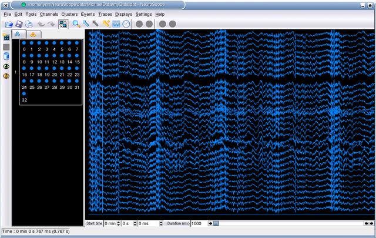
Note: if the channel amplitudes are too large, they can be easily adjusted (see Traces).
The window contains two functionally distinct areas: the Palettes on the left, and the Display containing a Trace View on the right. These will be discussed in the following sections.
NeuroScope provides several palettes to manipulate the data, shown as tabs on the left of the main window: the Anatomical Groups Palette (Anatomy), the Spike Groups Palette (Spikes), the Spectral tab (settings of the Spectral View), as well as the Units Palette and the Events Palette (the latter two become available upon loading cluster and event files, respectively). To display a palette, click on the corresponding tab. Each tab has a distinctive icon next to the palette name to make it more easily identifiable. Optionally, palette names can be hidden, leaving only the icons, to save space in the main window (see Settings).
The Anatomical Groups Palette and the Spike Groups Palette are both used to manipulate the local field potential traces, and they share very similar behaviors. While the purpose of both palettes is to selectively display and group related channels, their main difference lies in how the groups are defined.
Suppose you record data from both the neocortex and the hippocampus: you may want to assign all channels recorded from the neocortex into one group, and all channels recorded from the hippocampus into another group, or maybe have two distinct groups for CA1 and CA3, respectively. This is what anatomical groups are for. More generally however, anatomical groups can be used to implement any classification you may wish, e.g. sites from the same shank in recordings using silicon probes. Anatomical groups are handled in the Anatomical Groups Palette.
On the other hand, spike groups are related to unit activity. In most experimental paradigms, you will want to study neuronal firing patterns, and thus you will need to extract unit activity from local field potentials. Usually, the spikes emitted by each single unit appear only on a limited subset of the channels. In NeuroScope, each such set of channels (e.g. a tetrode) is referred to as a spike group. Although NeuroScope will not perform spike extraction and classification (many other tools are available to perform these tasks), it will help you define the spike groups for later processing. Remember that spike groups are not necessarily equivalent to physical electrode groups: for instance, if one channel from a tetrode is floating or too noisy, discarding it altogether will yield better results during subsequent spike sorting. In general, these groups cannot be efficiently defined without first inspecting the data. This is why NeuroScope provides the ability to define spike groups. These are handled in the Spike Groups Palette
Unit activity can be extracted and sorted using a combination of automatic and manual cluster cutting. Spike sorting applications include KiloKlustaKwik (the neurosuite-3 version of Kenneth D. Harris' KlustaKwik, an automatic cluster cutting command-line tool) and Lynn Hazan's Klusters (an advanced cluster viewer/editor); both are part of neurosuite-3. Cluster files can be loaded into NeuroScope, which allows for browsing identified unit activity together with local field potentials. The Units Palette is where you perform all operations related to spike clusters.
Many experimental paradigms involve correlating brain activity with behavior. The latter is often described using timestamped markers listed in an event file. These event markers can be loaded and displayed in NeuroScope, which allows for visually assessing relations between behavioral events (water delivery, tone onset, etc.) and the occurrence of neurophysiological activity (increased neuronal firing, theta rhythm, etc.) The Events Palette is where you perform all operations related to behavioral events.
The first task you will want to perform upon starting NeuroScope is to group related channels. Usually, this is first done in the Anatomical Groups Palette, because this determines how the channels are displayed. Indeed, in the display channels are layed out in the same order as they appear in the Anatomical Groups Palette: the first channel of the first group appears at the top, the second channel of the first group appears right below, etc. until the last channel of the last group which appears at the bottom of the display. Also, groups are separated by small gaps so they are more readily visible.
Initially, all channels belong to the same group. In order to create a new group, you must first select the channels you want to group by clicking on the corresponding colored circles in the palette. Use Shift or Ctrl for multiple selections (see the Edit menu for more choices). Then, group these channels by selecting or by clicking on .
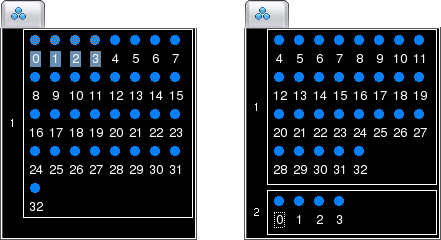
On the display, groups are spatially separated by small gaps to make them more readily visible.
You may want to discard floating or noisy channels altogether. This can be done by selecting the channels and selecting or by clicking on . The channels will be moved to the Discarded Group, as indicated by the small trash icon next to the group box in the palette.
Notice that discarding channels does not modify your data in any way: it does not actually remove the channels from the data files, but merely hides them from the display. Discarded channels can be brought back by moving them to an existing group (this is explained in Moving Channels between Groups).
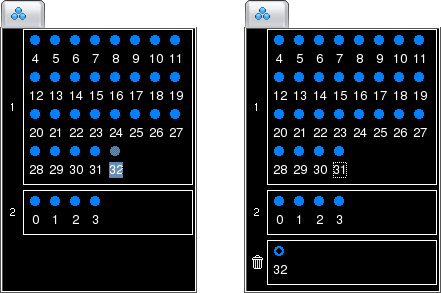
You may have noticed in the above screenshot that the circle for the channel in the Discarded Group is now hollow. This is a visual hint to indicate that this channel is now hidden from the display (for more information on hidden channels, see Showing and Hiding Channels).
If you are viewing data recorded from silicon probes and one or more channels are unusable (e.g. floating or extremely noisy), you may want to discard those channels using the method described in the previous section. However, this would not be appropriate here because valuable spatial information would be lost: due to dynamical rearrangement of the display, the layout of the traces would no longer reflect the spatial arrangement of the recording sites on the probes. The solution is instead to have NeuroScope 'skip' the unusable channels by selecting the channels and choosing or by clicking on . The traces will be hidden and replaced with a small gap, thus ensuring that the overall layout of the channels remains unchanged in the displays. The corresponding circles in the palettes will also be hidden (leaving only the channel numbers).
You can bring back skipped channels by selecting the channels and choosing or by clicking on . The channels will be reappear in the displays and the palettes.
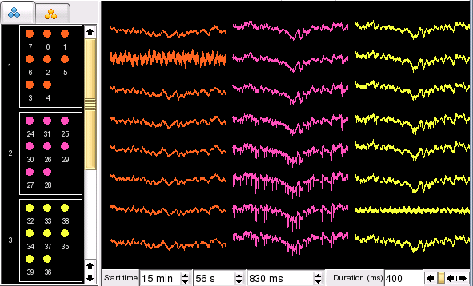
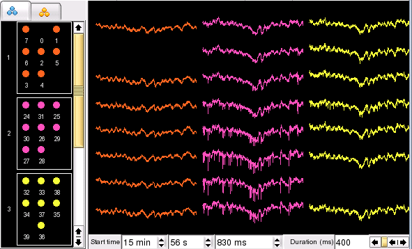
Channels can be moved from one group to another group by simply dragging and dropping the corresponding circles in the palette. This includes moving channels to and from the Discarded Group.
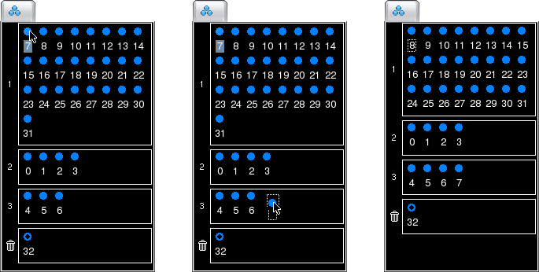
Note that the channels cannot be dropped on top of another channel (if you attempt this, the pointer will turn into a "forbidden" cursor and the operation will be canceled). Instead, they must be dropped on an empty space.
Channels can be easily reordered within a group by dragging and dropping the corresponding circles in the group box, similar to moving channels between groups except that the displacement occurs within a single group.
Groups can also be reordered using a drag and drop approach. To select a group, click on its ID (the number on the left side of the group box). You can then drag it and drop it just above or below the ID of another group to move it there.
As mentioned earlier, the typical way to organize channels is to first work with anatomical groups. In many cases, spike groups are mostly identical to anatomical groups: anatomical groups could thus be used as a basis to define spike groups. In such cases, NeuroScope can reuse the groups in the Anatomical Groups Palette to define spike groups: select . Since this will override any existing spike groups, you will be prompted for confirmation if you have already defined spike groups.
While all the above mentioned operations apply to both anatomical and spike groups, this feature is only relevant for spike groups. It provides a way to deal with those channels that did not record any unit activity, although they did record valuable local field potential information. Obviously, these channels should not be discarded. However, they should not be used for spike extraction and sorting, either. In order to indicate that these channels do not belong to any spike group, select them and choose or click on
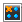
. The channels will be moved to the Undefined Spike Group, indentified by the question mark. Notice that this is the same group where all channels are initially listed before you start defining spike groups.
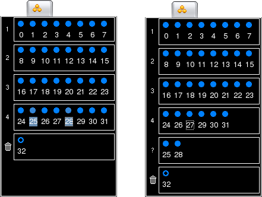
Notice that removing channels from a spike group does not modify your data in any way: it does not actually remove the channels from the data files, but removes their IDs from the list of spike groups used for subsequent spike extraction and sorting. Removed channels can be brought back by moving them to an existing spike group (this is explained in Moving Channels between Groups).
As mentioned previously, channels can be selected by clicking on the corresponding circles in the palettes. Clicking on a group ID (the number on the left side of a group box) will select or deselect all the channels in the group at once. Another, more graphical way is to directly click on the traces in the display using the Select Channels tool. To activate this tool, select or click on
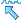
. Use Ctrl for multiple selections (see Labels and Calibration Bars for yet another way to select channels).In order to make individual channels as well as channel groups more readily visible, channels can be colored using three different schemes:
By Anatomical Group: A color can be assigned to all the channels in a given anatomical group by middle-clicking on the group ID in the Anatomical Groups Palette. This brings up the Color Chooser. As soon as you validate your new choice, the palettes and display will be updated accordingly. The new colors are referred to as the Anatomical Group colors for the given channels.
By Spike Group: Similarly, a color can be assigned to all the channels in a given spike group by middle-clicking on the group ID in the Spike Groups Palette. The new colors are referred to as the Spike Group colors for the given channels.
By Channel: Additionally, an individual channel can also be assigned a color by middle-clicking on the corresponding circle in either palette.
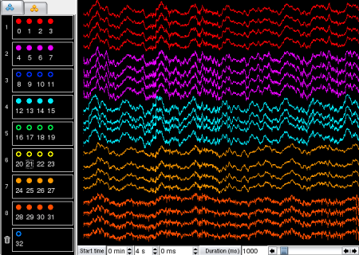
Although each channel can only have one single color at a time, Anatomical Group colors and Spike Group colors are always kept in memory. This means that although assigning an individual channel a new color will change its color in the display, this will not override its Anatomical Group color nor its Spike Group color (in memory): these can still be later reactivated. Similarly, changing Anatomical Group colors does not affect Spike Group colors and vice versa.
To recolor all channels using Anatomical Group colors, select . Similarly, to recolor all channels using Spike Group colors, select .
Contrary to Anatomical Group colors and Spike Group colors, individual channel colors are not kept in memory. You can think of them as temporary colors: they are typically used when you need to temporarily identify one particular channel from the other channels in the same group.
When you first open a data file with NeuroScope, all the channels are shown in the display. But you can decide to hide some channels, for instance to temporarily focus on a subset of the data. To hide channels, select them (in either palette or directly in the display), and choose or click on
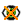
. The remaining channels will be reorganized in the display to optimally utilize the available space. The circles in the palette will become hollow to indicate that the channels are now hidden (see the above figure).To make hidden channels visible again, select the corresponding circles and choose or click on .
Channel amplitudes can be adjusted by selecting channels and choosing or . To adjust all channels at once, select or . To reset the amplitudes to their default (initial) settings, select channels and choose . With the mouse, Ctrl+Shift and the wheel increase or decrease the amplitude of all channels.
To centre each trace on its mean value over the current time window, toggle . This is useful for channels with a large or drifting DC offset.
Channels can be offset by clicking on the traces and dragging them by the appropriate amount using the Select Channels tool. To activate this tool, select or click on . Use Ctrl for multiple selections (see Labels and Calibration Bars for yet another way to select channels). Notice that in order to provide visual feedback the traces become slightly thicker when the channels are selected using the Select Channels tool. As you drag them around, their new positions are indicated by white outlines. Upon releasing the mouse button, the traces will move to their new positions.
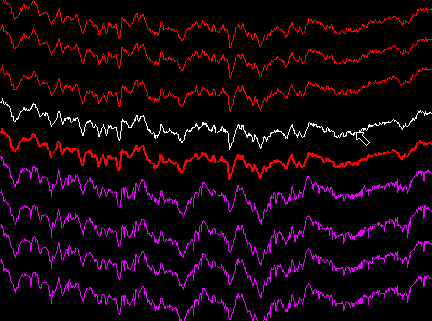
When the physical organisation of your electrodes is more complex than vertical arrays (e.g. epidural electrodes covering the surface of the brain), NeuroScope provides a way to store your electrode layout. This can be done by redefining the default offsets which are stored in the parameter file (see File Formats). To set the current offsets as the default offsets, select . To set the default offsets back to zero, select .
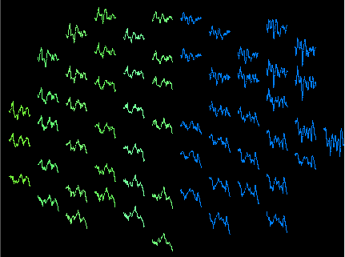
Default offsets can be reused for subsequent experiments. This can be done using NDManager, which is part of neurosuite-3 together with NeuroScope and Klusters. Alternatively, this can also be done manually by duplicating and modifing the parameter file (see File Formats).
A very useful feature when recording from multisite silicon probes is the ability to display each shank as a separate 'column', so that the traces are laid out on the screen in a similar way as the physical recording sites in the brain. Select . Channels from each Anatomical Group now appear in separate columns.
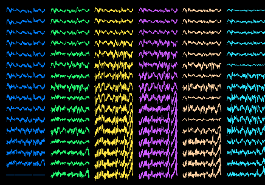
Keep in mind that although Anatomical Groups were primarily designed to help you organize the channels to reflect the positions of the electrodes in the brain, they can be more generally used to implement any kind of classification that may suit your needs.
When channels are hidden in multiple column mode, dynamical reorganization of the display may not always be the appropriate behavior. Indeed, if you are viewing data recorded from silicon probes, you will most likely prefer keeping the channels always laid out in the same way no matter how many channels are displayed, rather than having them moved around to optimize the available space. In order to hide channels while keeping their spatial arrangement, use this trick: change the color of the channels you wish to hide to the background color (black, unless you modified it in the Settings).
Labels provide information about the traces: the ID of the corresponding channel, and the current amplitude. Labels can be showed by selecting (selecting this menu item a second time will toggle its status and hide the labels).
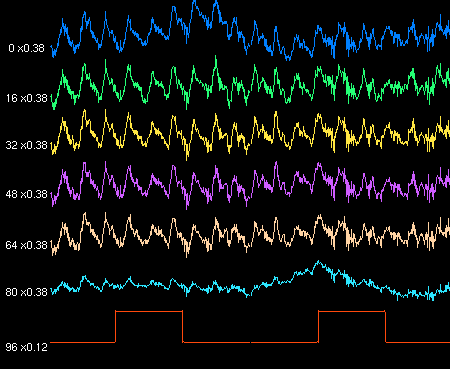
Amplitudes are described as follows. By convention, 'x1' corresponds to the current screen gain. Thus, assuming for instance a screen gain of 1 mV/cm, an amplitude of 'x0.38' corresponds to 0.38 mV/cm. Notice that different traces can have different amplitudes, as is the case in the above screenshot where local field potentials have a gain of x0.38 and the synchronization pulse has a gain of x0.12.
Calibration bars also provide scaling information. The horizontal bar indicates the time scale, and the vertical bar indicates the voltage scale for channel 0 (notice that there is only one vertical bar, but each channel can have a different amplitude, hence the need for a convention). Showing calibration bars is most useful when printing traces. To display or hide the calibration bars, toggle .
Labels can be shown or hidden on a display-by-display basis, but showing or hiding calibration bars applies to all displays at once (which is why these functions appear in different menus).
Besides clicking on the corresponding circles in the palette or on the traces in the display, channels can also be selected by clicking on the corresponding labels using the Select Channel tool. For multiple selections, this offers the possibility to use the Shift key (for continuous selections) in addition to the Ctrl key (for non-continuous selections).
All the features described up to this point are most useful in the initial stages of data exploration. But once all groups are defined, the interface can be simplified by enabling only those features related to data browsing. This is know as the View Mode, as opposed to the elaborate (default) Edit Mode. You can toggle between the two modes by selecting or clicking on
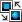
. In View Mode, the channels are represented by colored squares in the palettes: this visual feedback allows you to instantly differentiate between modes. Channels can now be shown or hidden by simply selecting or deselecting the corresponding squares - you no longer need to explicitly show or hide them.
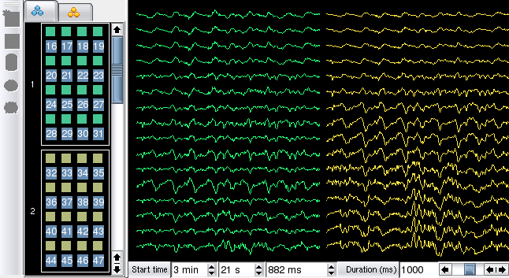
Notice that the editing tools are now disabled: you can no longer create, modify or delete groups, nor can you change channel offsets.
In View Mode, the palettes behave in the same way as in Klusters. This is also how the Units Palette and the Events Palette behave.
Select (S) to replace the traces of the active display with a time-frequency image (multitaper spectral estimate) of the channels and time window shown. Select it again to return to the traces.
The Spectral tab in the palette area sets the parameters: the mode (time-freq for one channel, band-chan for one frequency band across all channels), the number of tapers and time-bandwidth product, window, FFT length and step, the frequency band, the time window (locked to the trace window or an independent span), optional whitening, decimation and re-referencing, and the colour map and scale. Changes are not applied at once: the title of the view shows that an update is pending, and pressing U computes the image with the new settings.
To compare two versions of the same recording (for instance the
wideband and a filtered signal), select and choose a .dat,
.lfp or .eeg file with the same channel layout
as the open file. It is drawn on top of each channel in a contrasting
colour.
NeuroScope provides the possibility to use several displays at once, which can be useful to examine different subsets of the data in parallel. To open a new display, select . The new display is copied from the currently active display as a starting point, and can then be independently modified. After you have modified the contents of a display to fit your needs, you may wish to change its title (the label of the tab) to reflect your changes. Select . This will bring up a dialog where you can type the new title for the currently active display.
There are several ways to navigate through the data:
To move to a particular point in the data, enter the
corresponding time in the Start time text boxes (below the traces). Time
is typically entered in minutes, seconds and milliseconds.
Alternatively, you can use cumulative seconds or milliseconds: for
instance, entering 0 min 180 s 0 ms, or
0 min 0 s 180000 ms is equivalent to entering
3 min 0 s 0 ms.
To modify the duration of the time window shown in the display (1 s by default), change the value in the Duration text box (below the traces). This value can be doubled by hitting the + key, or divided by two by hitting the - key. The mouse wheel also zooms the time axis around the pointer.
To display the next time window, click on the scroll bar below the traces, in the empty space on the right side of the slider. Similarly, clicking on the left side of the slider displays the previous time window. While the scroll bar has the keyboard focus, Page Down and Page Up do the same.
To move by smaller amounts, click on the arrows of the scroll bar, or hit Left Arrow or Right Arrow (a quarter of the time window). Holding Ctrl and dragging with the left mouse button pans the view (except with the Select Channels tool, where Ctrl-click selects channels).
To move to the beginning or the end of the data, hit the Home or End keys while the scroll bar has the keyboard focus.
Dragging the slider in the scroll bar is another way to move within the data.
To page through the data automatically, toggle (Ctrl+Shift+Space). The display advances by one time window at a fixed interval until the end of the recording; changing the start time or moving the scroll bar stops it. (Ctrl+Up) and (Ctrl+Down) shorten or lengthen the interval in steps of 125 ms (between 0 and 1000 ms).
Holding Ctrl while turning the mouse wheel zooms in or out around the pointer.
Page Up, Page Down, Home and End are handled by the scroll bar, so they only work while it has the keyboard focus (click on it). If the focus is in one of the text boxes below the traces, keys edit the text box instead (e.g. End moves the insertion point to the end of the text).
NeuroScope provides a set of tools to help you efficiently browse and edit your data. Whichever tool you select, when the cursor is located within the display, the time below the pointer (counted from the beginning of the data) is indicated in the Status Bar.
Only one tool is active at a time: choosing a tool replaces the previous one, and the active tool stays highlighted on the toolbar. Each tool can be selected from the Tool menu, from the toolbar, or with its keyboard shortcut: Z (Zoom), C (Select Channels), V (Measure), T (Select Time), E (Select Event) and L (Draw Time Line); Add Event has no shortcut and is chosen from the Tool menu or its toolbar drop-down. When several displays are open, the active tool is remembered for each display, so the toolbar highlight follows the display you are working in. All of these shortcuts can be listed or changed as described in Keyboard and Mouse Shortcuts.
To zoom on a particular area in the display, select or click on . Now click on the center of the area you wish to enlarge. Alternatively, you can select the area to enlarge (click and hold the left button, then drag the mouse to select the area). Double-clicking will bring the zoom level back to the initial state.
In order to quickly assess the temporal relationships between physiological events occurring on different channels, a vertical time line can be temporarily displayed on the traces. To display the time line, select or click on . Now click and drag the mouse around in the trace view: the time line follows the cursor until you release the mouse button. In multiple column mode, the time line is drawn in each of the columns at the same position in time.
As usual, while you move the pointer within the display, the time at the cursor position is displayed in the Status Bar.
To select one or more channels directly from the display, choose or click on . Now hold the Ctrl key and click on the channels you wish to select. As a visual feedback, the traces become slightly thicker when the channels are selected. Notice that this does not allow for continuous selection. Use this method instead.
To measure on the traces the amplitude and duration of a neurophysiological event (an action potential, a theta cylce, etc.), select or click on . Click on the upper left corner of the rectangular region you wish to measure, and drag the pointer to the lower right corner: the corresponding voltage and duration are indicated in the Status Bar.
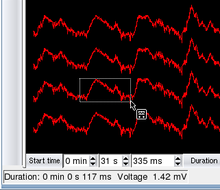
To graphically refine the displayed time window, select or click on . Click at the start time of the window you wish to define, then drag the pointer to the end time: the displayed time window will be updated accordingly. Notice that this is different from zooming in two respects: first, only the horizontal component of the selection (time) is taken into account, and second this actually redefines both the Start time and the Duration, rather than temporarily focusing on a particular portion of the display.
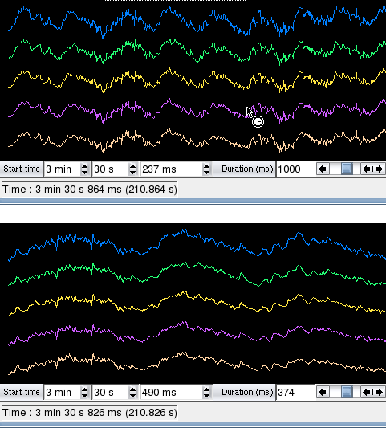
As usual, while you move the pointer within the display, the time at the cursor position is displayed in the Status Bar.
To select a single event, choose or click on
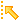
, and click on the event line in the display. The event can now be moved or deleted. For more details, see Events.To add a single event to an existing event file, select an event type under or click on
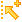
, optionally selecting an event type in the drop down menu, and click in the display where the new event should be added. For more details, see Events.Unit activity is described in two files: a spike time file (listing
the timestamps of the spikes) and a cluster file (assigning each spike
to a cluster which corresponds to a putative unit). In addition, if the
open trace file is the wideband (.dat) or high-pass
filtered (.fil) file, spike waveforms can be highlighted on
the traces. This is explained in more detail in File Formats. The spike time file and the cluster
file can be loaded by selecting (multiple files can be opened in parallel).
This creates a new cluster box in the Units Palette, where all the
clusters are listed (the Units Palette is created upon loading the first
cluster file).
To display the spikes fired by certain clusters, select the corresponding clusters by clicking on the colored squares in the palette. Use Shift or Ctrl for multiple selections. Clicking on a cluster file ID (the number on the left side of a unit box) will select or deselect all the clusters in the file at once. Hold the Shift key while clicking on a cluster file ID to select all clusters except 0 and 1 (artefacts and noise, respectively).
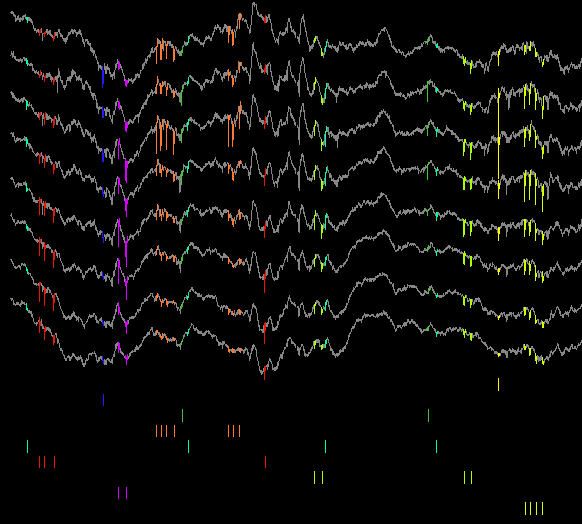
NeuroScope provides three different graphical representations for spikes. You can activate or deactivate one or more representations by selecting or deselecting the corresponding items in the Units menu.
Vertical Lines: each spike is represented as a vertical line spanning the entire display.
Rasters: spikes are represented as small vertical segments below the local field potential traces, grouped by unit. In the display, the total height devoted to the rasters (vs the traces) can be adjusted by selecting or .
Waveforms: spike waveforms are highlighted on their respective
traces (for instance, since the .clu.5 file describes the
clusters of spike group 5, selecting a cluster from this group will
cause NeuroScope to draw the corresponding waveforms on the traces
listed in the spike group 5). Highlighting is rendered even more visible
if the traces are drawn using shades of gray instead of colors. This can
be obtained by selecting .
The waveforms can be drawn only when the open trace file is a
.dat or .fil file, as the waveform information
is not available in low-pass filtered data (.lfp).
In multiple column mode, spikes recorded from a given set of electrodes are shown only in the column containing the corresponding traces. If however these traces are split across two or more columns, the spikes will be shown in each of these columns.
Pyramidal or granule cells typically fire at low rates. Thus, when examining their firing patterns, you may sometimes find it difficult to locate those epochs when the neurons discharge. NeuroScope provides a mechanism to easily 'browse' spikes, i.e. to automatically move the time window to the previous or next spike fired by one or more neurons. First, indicate which clusters you wish to browse by holding both Ctrl and Alt and clicking on the corresponding colored squares in the palette (only already selected clusters can be used). The squares are now replaced by triangles to reflect their activated state. Now, choose or click on to move the time window to the previous spike fired by one of the activated clusters, or choose or click on to move the time window to the next spike.
Holding Ctrl and Alt while clicking on a cluster file ID will activate or deactivate all selected clusters in the corresponding file.
Since only selected clusters can be browsed, deselecting a unit will automatically reset its activation state.
Events are described in one or more event files (listing the timestamps and descriptions of the events, see File Formats). Event files can be loaded by selecting (multiple files can be opened in parallel). This creates a new box in the Events Palette, where all the events are listed (the Events Palette is created upon loading the first event file).
To display certain events, click on the colored squares in the palette. Use Shift or Ctrl for multiple selections. Clicking on an event file ID (the three letters on the left side of an event box) will select or deselect all the events in the file at once. Events are represented as colored dashed lines spanning the whole display.
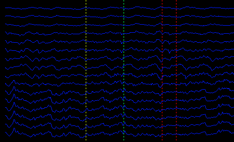
NeuroScope provides a mechanism to easily 'browse' events, i.e. to automatically move the time window to the previous or next event among a list of activated events. First, indicate which events you wish to browse by holding both Ctrl and Alt and clicking on the corresponding colored squares in the palette (only already selected events can be used). The squares are now replaced by triangles to reflect their activated state. Now, choose or click on to move the time window to the previous activated event, or choose or click on to move the time window to the next activated event.
Holding Ctrl and Alt while clicking on an event file ID will activate or deactivate all selected events in the corresponding file.
Since only selected events can be browsed, deselecting an event will automatically reset its activation state.
To select a single event, choose or click on , and click on the event line in the display. The event line becomes slightly thicker. The event can now be moved or deleted.
To move an event, i.e to change its timestamp, select it in the display, and move the pointer while holding the mouse button. As you drag the event around, its new position is indicated by a white outline. Upon releasing the mouse button, the event will move to its new position.
To delete an event, select it in the display, and choose (Ctrl+K).
To add a single event to an existing event file, first choose in the palette the event file where the event should be added by clicking on the three-letter ID on the left side of the corresponding event box. Then, select an event type under or click on (optionally selecting an event type in the drop down menu). Now click in the display where the new event should be added.
New event types can also be created, by selecting under either of the two menus mentioned above. A dialog box will pop up to allow you to provide a new event description.
To undo the last operation (addition, deletion, or timestamp change), select . Conversely, after canceling an operation, selecting will apply the changes again.
A new event file can be created by selecting and choosing a new name in the file creation dialog. A new box appears in the Event Palette, where new events can now be added.
In certain behavioral experiments, e.g. when studying place cells or head direction cells, it is necessary to record brain signals as well as the ongoing position and orientation of the animal. The latter is usually stored in a file listing the positions across time of one or more small lights (spots) attached to the head of the animal (see File Formats). NeuroScope has the ability to simultaneously display brain signals and the successive positions of the animal during the same episode.
To open a position file, select . A new view is added in the display, showing the successive positions recorded during the current time window. The spots are represented as colored circles linked by gray lines (e.g., a segment for two spots, a triangle for three spots, etc.) The front spot is drawn in red, and all the other spots in green. Also, the last position in the current time window is highlighted: the circles are larger, and the lines are white. This helps determine the direction of movement.
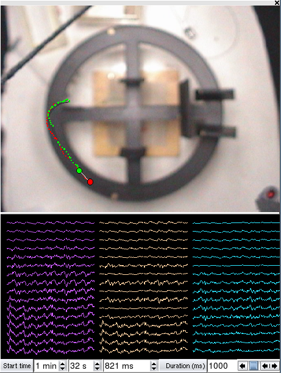
Events can be superimposed on the position display as colored crosses. Events are drawn at the position where the animal was at the time of their occurent. Notice that if no the position of the animal could be detected at the time of the event, this will not be drawn. To display or hide the events, toggle .
By default, the positions are drawn against a black background, but NeuroScope can instead use an overview of the behavioral maze as a background image. Select , and choose the Positions tab, where you can specify the image location on your disk. You can also flip and rotate the image (the positions will be flipped and rotated accordingly). In addition, NeuroScope can draw over the background (be it a black background or an image) an outline of the trajectory of the animal throughout the experiment. This can be activated using the Draw trajectory checkbox.
Selecting brings up the File Properties dialog. In this dialog, you can check and edit a number of parameters related to the current session. These parameters are described in Settings (notice that although the File Properties dialog is very similar to the Defaults tab of the Settings dialog, the former is related to the current session only, whereas the latter defines the default values for new sessions). Changes in the File Properties dialog will be applied immediately upon validation.
One item in the File Properties dialog needs special mention: the
Sampling Rate for this File entry. This is useful when you work with
data files other than the .dat file (which contains raw
data, and thus has the same sampling rate as the acquisition
system).
To print the current display, select . This brings up the print dialog. To print the traces on a white background (this saves printer ink), check Use white background when printing on the General page of .
If a position view is opened, each view is printed on a separate page. The file name, the starting time and time frame of the trace view are printed below the figure. The filie name of the position view is printed below the position figure.
Exporting is achieved in a similar way as printing. Select . In the print dialog, choose Print to File (PDF) (or your system's PDF printer) to export the display as a Portable Document File.
A PDF file can be imported into a drawing program for additional editing, and it is convenient for sharing a figure with other investigators: it looks identical on Linux, macOS and Windows.
In a typical session, you open a data file, browse the local field
potentials, maybe create several different displays, load and display
spikes, events and positions, etc. You then end your session. The next
time you reopen the same data file, NeuroScope will make sure that your
session is restored exactly as it was when you closed it. Even better,
this will happen whatever file you open from the same recording, be it
the .dat file, the .lfp file, or any other
recording file. This is made possible because all the relevant
information is automatically saved to disk when you end a session (you
do not need to explicitly save it yourself). Notice that this is
different from saving your work via the Save menu entry or toolbar
button, which writes the parameter file (acquisition settings, sampling
rates, anatomical and spike groups, channel colours and default offsets)
and any modified event files, in addition to the session file.
Every menu command, tool and mouse gesture in NeuroScope is driven by one central list of bindings. You can see the whole list at any time, and you can change almost any of them to suit your habits.
Select to open a read-only list of every command together with the key, mouse button or wheel action currently assigned to it. The list is split into a Keyboard section and a Mouse section, and within each the commands are grouped by category: the menu or tool they belong to.
To change a binding, open and select the Input page. Each command is shown on its own row with its current binding:
For a keyboard command, click the field and press the new key combination.
For a mouse command, choose the button (or wheel direction) and any modifier keys from the controls on the row.
If two commands that apply in the same context are given the same binding, both fields are highlighted so you can resolve the clash. A few bindings belong to a temporary mode and are shown read-only.
Each row has a Reset that restores that command's shipped default. To undo all of your changes at once, use Reset all to defaults at the top of the page. Changes take effect when you click Apply or OK, and are remembered across sessions.
The top of the Input page carries a Keymap layout bar that lets you keep several named sets of bindings and switch between them:
Pick a layout from the list and click Apply to load it into the rows below.
Save As... captures your current bindings as a new, named layout.
Rename and Delete act on your own saved layouts. Built-in layouts are read-only and cannot be renamed or deleted.
NeuroScope ships with one built-in layout, Default, which holds the program's original keyboard and mouse bindings. Applying it is a convenient way to return to the shipped configuration (the same effect as Reset all to defaults). As with individual edits, a change of layout is only stored when you click Apply or OK.
Selecting will open the Preferences dialog. This lets you configure several default behaviors of NeuroScope.
In this page, you can configure the following:
Background color. This setting affects all views.
Display labels in the palette headers. This shows or hides the labels ('Anatomy', 'Spikes', 'Units' and 'Events') next to the icons in the palette tabs. Hiding them saves some space. The Spectral tab always shows its name.
Align events.... This setting is used when you browse events. For instance, each time you move to the next event, the time window is shifted forward in such a way that the next event appears at a fixed position in the display. This setting determines where the events are aligned in the display.
Align units.... Same as above, for spikes.
Use white background when printing. Prints the traces on a white background instead of the display background colour.
In this page, you can configure the default values for the items contained in the following categories.
Channels
Number of channels. Default number of channels.
Sampling rate (Hz). Default sampling rate of the
.dat files.
Resolution (bits). Default resolution of the recording system.
Initial offset. Default offset in the recording system.
Voltage range (V). Default total voltage range of the recording system, e.g. 10V for ±5V.
Amplification. Default gain of the amplifiers.
Screen gain (mV/cm). Default screen gain (see this paragraph for details).
Sampling rate for EEG (Hz). Default sampling rate of the local
field potentials file (.lfp, formerly
.eeg).
Background image. Background image for the Trace View. You can use any image format that your Qt installation can read (for instance PNG, JPEG, BMP or GIF).
Units
Number of samples per waveform. Default number of samples per waveform, used when highlighting waveforms on the traces.
Index of the peak sample. Default peak sample in the waveforms, used when highlighting waveforms on the traces.
Positions
Sampling rate (Hz). Default sampling rate of the position file.
Width (pixels). Default horizontal resolution of the video camera.
Height (pixels). Default vertical resolution of the video camera.
Background image. Background image for the Position View. You can use any image format that your Qt installation can read (for instance PNG, JPEG, BMP or GIF).
Draw trajectory. Activate this to draw over the background (be it a black background or an image) an outline of the trajectory of the animal throughout the experiment.
Rotate CCW (degrees). This allows you to rotate (counterclockwise) both the position data and the background image.
flip. This allows you to flip both the position data and the background image.
Theme: System, Light or Dark. The theme applies to all NeuroSuite programs and takes effect when you click Apply or OK.
In this page, you can view and change the keyboard shortcuts and mouse bindings used throughout NeuroScope, and keep named keymap layouts. See Keyboard and Mouse Shortcuts for details.
NeuroScope reads electrophysiological data from a set of files. Each
of these files has a name of the form base.ext or
base.n.ext (or base.ext.n), where
base stands for the common base name of all files belonging
to a single recording session, ext is an extension
describing the type of data stored in the file, and n
stands for the ID of the particular group of channels from which the
data was recorded. Thus, using this convention the data for session
CS150612 would be named CS150612.dat, the low-pass filtered
data for local field potentials would be named CS150612.lfp
and the cluster file for tetrode 2 would be named
CS150612.2.clu or CS150612.clu.2.
More specifically, the data files are organized as described in the
following sections. The complete format reference for all neurosuite-3
files is in doc/ndmanager-plugins/formats/ in the source
tree.
Generic file name: base.dat for the raw data,
base.lfp (formerly base.eeg) for local field
potentials, base.fil for high-pass filtered data, and more
generally base.ext for any other type of filtered data
(where ext is extension describing the type of data stored
in the file).
Format: 12, 14, 16 or 32 bit binary.
The data file contains the data for each channel. Assuming
N1 channels (channel1...channelN1) and
N2 samples (sample1...sampleN2) the data are
stored as follows:
sample1_channel1
sample1_channel2
...
sample1_channelN1
sample2_channel1
sample2_channel2
...
sample2_channelN1
...
sampleN2_channelN1Generic file name: base.n.clu (or
base.clu.n)
Format: binary or ASCII (detected automatically; the
.clu and .res files of a group must use the
same form). The pipeline writes binary files: a 32-bit header followed
by one 32-bit cluster ID per spike (see
doc/ndmanager-plugins/formats/clu.md).
In the ASCII form, the cluster file lists the cluster ID of each
spike, one per line. The first line contains the total number of
clusters. Assuming N spikes (spike1...spikeN),
this file looks like:
nClusters
clusterID_spike1
clusterID_spike2
clusterID_spike3
...
clusterID_spikeNNotice that the last line must end with a newline or carriage return.
Generic file name: base.n.res (or
base.res.n)
Format: binary or ASCII (detected automatically). The pipeline writes
binary files: one 64-bit sample index per spike, with no header (see
doc/ndmanager-plugins/formats/res.md).
The spike time file lists the timestamp for each spike. The timestamp
is expressed in multiples of the sampling interval. For instance, for a
20kHz recording (50 microsecond sampling interval), a timestamp of 200
corresponds to 200x0.000050s=0.01s from the beginning of the recording
session. In the ASCII form, assuming N spikes
(spike1...spikeN), this file looks like:
timestamp_spike1
timestamp_spike2
timestamp_spike3
...
timestamp_spikeNNotice that the last line must end with a newline or carriage return.
Generic file name: basename.id.evt or
basename.evt.id, where id is a three-character
identifier with at least one non-digit character (e.g.
CS150612.rip.evt, CS150612.evt.s01). The
identifier is shown in the Events Palette.
Format: ASCII
The event file lists the events and their timestamps. The timestamps
are given in miliseconds (floating point values) and the event types are
arbitrary strings. Assuming N events
(event1...eventN), this file looks like:
timestamp_event1 description_event1
timestamp_event2 description_event2
timestamp_event3 description_event3
...
timestamp_eventN description_eventNNotice that the last line must end with a newline or carriage return.
Generic file name: basename.pos by convention (any
extension is accepted)
Format: ASCII
The position file lists the x and y
coordinates of the each spot. Assuming N position samples
(position1...positionN) and M spots on the
head of the animal, this file looks like:
x_position1_spot1 y_position1_spot1 ... x_position1_spotM y_position1_spotM
x_position2_spot1 y_position2_spot1 ... x_position2_spotM y_position2_spotM
...
x_positionN_spot1 y_positionN_spot1 ... x_positionN_spotM y_positionN_spotMBy convention, spots which have not been detected by the video recording system should be given negatives coordinates. These spots will not be drawn in the position view.
Notice that the last line must end with a newline or carriage return.
Generic file name: base.yaml (or
base.yml)
Format: YAML
The parameter file is a generic file which contains information required by many related programs; NeuroScope only needs a subset of this information. The parameter file is optional: it is usually written by NDManager (part of neurosuite-3), but if you do not provide it, NeuroScope will prompt you for the necessary information and write a parameter file when you save (however, contrary to NDManager, NeuroScope writes only the subset of fields that it requires, and not a full parameter file). When it saves, NeuroScope updates its own fields and keeps the rest of an existing file.
Older parameter files in XML (base.xml) are not read;
convert them with ndm_xml2yaml from the NDManager
plugins.
Generic file name: base.nrs
Format: YAML. An older XML session file cannot be read: NeuroScope ignores it, opens the data with default display settings and replaces it with a YAML file when the session is saved.
The session file is where NeuroScope stores information related to the working environment: the number of displays and their settings (start time, duration, visible channels, amplitudes, etc.), loaded cluster, event and position files, etc. This ensures that when you reopen a data file, your session is restored exactly as it was when you closed it.
The shortcuts listed here are the defaults. lists the bindings currently in effect, and they can be changed on the Input page of . On macOS, Ctrl is the Command key.
Opens a data file, or a session file (.nrs).
Opens a file selected from a list of recently opened files.
Loads one or more cluster files (each with its spike time file).
Loads one or more event files.
Creates an event file.
Loads a single position file.
Loads a second trace file with the same channel layout and draws it on top of each channel (see Overlay Trace Files).
Saves the parameter file, the session file and any modified event files.
Saves the session file in a new location.
Prints (or exports as PDF) each view of the current display in a separate page.
Opens a dialog displaying the properties of the currently opened file. These properties can be edited.
Closes the session (will prompt for saving if necessary).
Closes the cluster file currently selected in the Units Palette.
Closes the event file currently selected in the Events Palette.
Closes the position file.
Quits NeuroScope (will prompt for saving if necessary).
Undoes the last change (for event edition only).
Redoes the last undone change (for event edition only). The shortcut is the platform's Redo key: Ctrl+Shift+Z on Linux, Ctrl+Y on Windows.
Selects all the items in the current palette (channels, clusters or events).
Selects all clusters except artefacts (cluster 0) and noise (cluster 1).
Deselects all the items in the current palette (channels, clusters or events).
Switches between edit and view mode.
Allows you to zoom on a point (left click) or area (click and drag); double-click to reset the zoom level to the initial state.
Allows you to temporarily draw a vertical line where you left click.
Allows you to select channels in order to act on them (move them to compensate for an offset, change the amplitude...)
Allows you to measure the time and the voltage between two points.
Allows you to refine the time frame used to display the data.
Allows you to select one event in order to move it or delete it.
Allows you to add a new event (select the type of event from the submenu).
Shows the selected channels.
Hides the selected channels.
Moves the selected channels to a newly created group (either an anatomical group or a spike group).
Removes the selected channels from their current group and puts them in the Undefined Group (the "?" group). This does not actually remove the channels from the data file.
Removes the selected channels from their current group and puts them in the Discarded Group (simultaneously acts on the anatomical and spike groups). This does not actually remove the channels from the data file.
Brings skipped channels back into the display.
Skips the selected channels: they are no longer drawn, but keep their place in the layout.
Synchronizes the anatomical and spike groups. The existing spike groups are discarded and replaced with the anatomical groups.
Colors the channels using the anatomical group colors.
Colors the channels using the spike group colors.
Draws spikes for selected clusters as long vertical lines.
Draws spikes for selected clusters as rasters below the local field potential traces.
Draws spike waveforms for selected clusters directly on the traces
(only for .dat and .fil files).
Increases the height of the rasters.
Decreases the height of the rasters.
Moves the time window to the next spike fired by one of the currently activated clusters.
Moves the time window to the previous spike fired by one of the currently activated clusters.
Moves the time window to the next activated event.
Moves the time window to the previous activated event.
Removes the currently selected event.
Shows or hides the position view.
Shows or hides the selected events in the position view.
Toggles between single and multiple column mode. In multiple column mode, each anatomical group is represented on a separate column.
Displays the channels in grey-scale.
Toggles the active display between the traces and the Spectral View.
Increases the amplitudes of all the channels (both visible and hidden).
Decreases the amplitudes of all the channels (both visible and hidden).
Increases the amplitudes of the selected channels.
Decreases the amplitudes of the selected channels.
Resets the offsets of the selected channels to the default offsets.
Resets the amplitudes of the selected channels.
Sets the current offsets as the default offsets to be stored in the parameter file.
Sets the default offsets to be stored in the parameter file to zero.
Centres each trace on its mean value over the current time window.
Shows or hides the labels (channel IDs and gains).
Pages forward automatically, one time window at a time, until the end of the recording.
Shortens the auto-advance interval by 125 ms.
Lengthens the auto-advance interval by 125 ms (up to 1000 ms).
Creates a new display, copied from the active one.
Brings a dialog enabling the user to enter a new label for the currently active display.
Closes the currently active display; when there is only one display, closes all data files as well (will prompt for saving if necessary).
Shows or hides the main toolbar.
Shows or hides the tools toolbar.
Shows or hides the Status Bar.
Shows or hides a calibration bar for channel 0 (voltage and gain are indicated).
Opens the Preferences dialog, including the keyboard and mouse bindings (Input page).
Opens this user manual.
Opens a list of all keyboard shortcuts and mouse bindings and the commands they trigger. See Keyboard and Mouse Shortcuts.
Shows information about the authors of and contributors to NeuroScope.
NeuroScope
Program copyright 2004 Lynn Hazan lynn.hazan@myrealbox.com
NeuroScope is now maintained by the neurosuite-3 maintainers as part of neurosuite-3.
Contributors:
Michaël B. Zugaro mzugaro@andromeda.rutgers.edu
The data shown in this documentation were kindly provided by:
Sean M. Montgomery smontgom@pegasus.rutgers.edu
David Robbe robbe@axon.rutgers.edu
Michaël B. Zugaro mzugaro@andromeda.rutgers.edu
This documentation is licensed under the terms of the GNU Free Documentation License.
This program is licensed under the terms of the GNU General Public License.
NeuroScope is part of neurosuite-3, together with Klusters, NDManager, the NDManager processing plugins and KiloKlustaKwik. The source is at https://github.com/Gravios/neurosuite-3; all the programs are built and installed together in one CMake build.
Qt 6.4 or newer, yaml-cpp and libxml2, a C++20 compiler (GCC, Clang, MSVC 2022 or Intel oneAPI) and CMake 3.22 or newer. The build can install the dependencies itself (see below). Linux is the reference platform; Windows 10/11 and macOS are supported.
On Linux and macOS:
% git clone https://github.com/Gravios/neurosuite-3.git
% cd neurosuite-3
% cmake -B build -DCMAKE_INSTALL_PREFIX="$HOME/.local" -DNS_INSTALL_DEPS=ON
% cmake --build build --parallel
% cmake --install build-DNS_INSTALL_DEPS=ON installs the dependencies with apt
or Homebrew; leave it out to install them yourself.
On Windows, in the repository, run
scripts\install-deps-windows.bat, which installs Visual
Studio's build tools, the libraries and Qt. Then, in a new x64 Native
Tools Command Prompt for VS 2022:
> cmake --preset windows
> cmake --build --preset windows
> cmake --install buildThe programs are installed to C:\ns3\bin, which is added
to your PATH.
The full guide, with the Intel GPU build, WSL2 and troubleshooting,
is doc/INSTALL.md in the source tree.